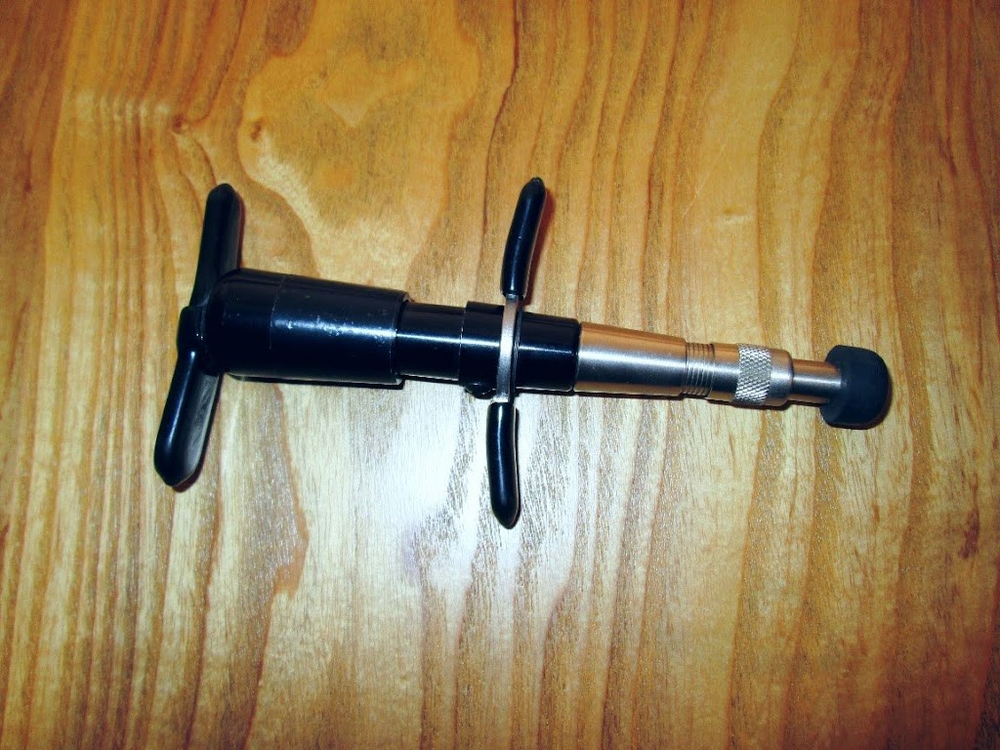

Crossroads, Kansas City
Chiropractic care for the whole person.
Whole-person chiropractic, acupuncture, and functional healthcare with Dr. Jaimie McCormick, at 1620 Locust Street.
Whole-person chiropractic
Chiropractic care that looks at the whole person, not just the sore spot.
Acupuncture
Acupuncture offered in the same office, alongside chiropractic care.
Functional healthcare
Functional healthcare as part of the practice's whole-person approach.
Hours: Tue 1 to 8pm, Wed 8am to 4pm, Thu 1 to 8pm, Fri 8am to 4pm, Sat 8am to 2pm. Closed Mon and Sun. Call to book.
Gallery

Photos of OM Chiropractic: an adjustment, the activator tool, and a plant in the office.
Contact
OM Chiropractic serves Kansas City, MO. Questions? Call (816) 561-1185.